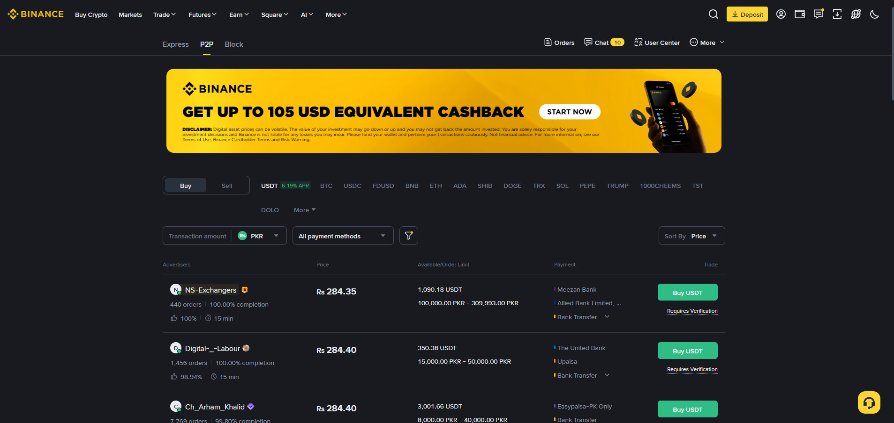
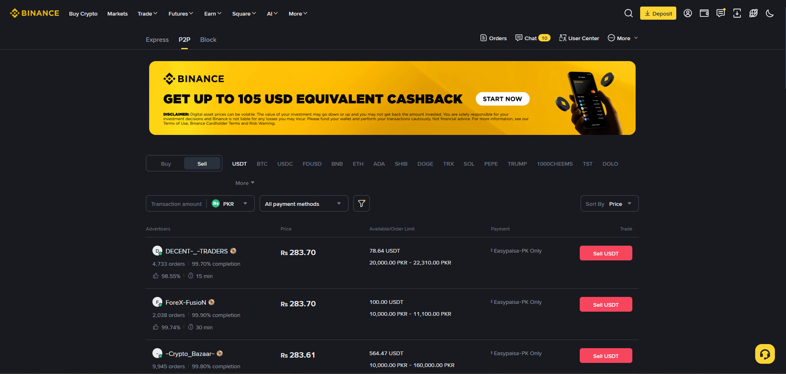

P2P (Peer-to-Peer) میں آپ کسی حقیقی شخص سے براہ راست کرپٹو خریدتے یا فروخت کرتے ہیں۔ بائننس صرف ایسکرو (Escrow) یعنی ضامن کا کردار ادا کرتا ہے۔ پاکستان میں PKR سے کرپٹو حاصل کرنے کا یہ سب سے عام اور اہم طریقہ ہے — اس لیے یہ باب آپ کے لیے خاص اہمیت رکھتی ہے۔

P2P = ایک شخص سے دوسرے شخص تک لین دین — کوئی بروکر نہیں، کوئی بینک نہیں۔ آپ ایک مرچنٹ سے USDT خریدتے ہیں اور اسے PKR منتقل کرتے ہیں۔
آپ: "مجھے 500 USDT چاہیے، بینک ٹرانسفر سے"
P2P: آپ کو مرچنٹ ملا — "PKR 278,000 کے بدلے دیں گے"
آپ: مرچنٹ کے بینک اکاؤنٹ میں PKR 278,000 منتقل کرتے ہیں
آپ: Binance پر "Payment Sent" دباتے ہیں
مرچنٹ: ادائیگی کی تصدیق کرتا ہے → Escrow سے 500 USDT رہا ہوتے ہیں
نتیجہ: 500 USDT آپ کے وولیٹ میں ✅| روایتی طریقہ | P2P |
|---|---|
| بینک کارڈ سے براہِ راست خرید — اکثر دستیاب نہیں | ✅ مقامی بینک/موبائل والیٹ سے |
| بین الاقوامی تبادلے | ✅ مقامی مرچنٹس |
| پیچیدہ عمل، محدود اختیارات | ✅ آسان، تیز |
| فیس زیادہ | ✅ صفر ٹریڈنگ فیس |
💡 پاکستانی صارف کے لیے P2P = کرپٹو کا دروازہ — یہیں سے USDT آپ کے اکاؤنٹ میں آتا ہے، اور یہیں سے روپے نکلتے ہیں۔
ایسکرو = بائننس کا قفل۔ جب آپ P2P آرڈر شروع کرتے ہیں، تو مرچنٹ کا USDT بائننس کے پاس قفل ہو جاتا ہے — وہ اسے واپس نہیں لے سکتا جب تک آپ کو نہ ملے۔
مرچنٹ کا USDT (500)
│
▼
┌─────────────────────┐
│ بائننس ESCROW │ ← یہاں قفل ہے
│ (مرچنٹ نہیں نکال سکتا) │
└─────────────────────┘
│
│ آپ PKR ادائیگی کرتے ہیں → "Payment Sent"
│ مرچنٹ تصدیق کرتا ہے
▼
500 USDT آپ کے وولیٹ میں ✅1. آپ "Payment Sent" کر چکے ہیں
2. مرچنٹ 15 منٹ تک تصدیق نہیں کرتا
3. آپ **Appeal** (استغاثہ) دائر کرتے ہیں
4. بائننس کا **ٹیم** تفتیش کرتا ہے
5. آپ اسکرین شاٹ/ثبوت دیتے ہیں
6. بائننس فیصلہ کرتا ہے → USDT آپ کو⚠️ اہم: ایسکرو صرف بائننس P2P کے اندر کام کرتا ہے۔ اگر آپ باہر (WhatsApp/Telegram) ادائیگی کریں، تو کوئی ایسکرو نہیں — پیسہ گیا۔
Buy Crypto ▾ → P2P
یا Trade ▾ → P2PCountry: Pakistan 🇵🇰
Fiat: PKR
I want to: Buy (خریدنا)
Crypto: USDT
Payment: Bank Transfer / JazzCash / Easypaisa| # | مرچنٹ | Price | Limit | Orders | Completion |
|---|---|---|---|---|---|
| 1 | Merchant A | PKR 278.10/USDT | PKR 5,000 – 500,000 | 5,000+ | 99% |
| 2 | Merchant B | PKR 278.30/USDT | PKR 10,000 – 300,000 | 12,000+ | 98% |
| 3 | Merchant C | PKR 277.90/USDT | PKR 1,000 – 100,000 | 3,000+ | 99% |
🎯 قیمت سے زیادہ اہم اعتماد ہے — 0.5% سستی قیمت پر دھوکہ کھانے سے بہتر ہے کہ تھوڑا زیادہ دیں مگر محفوظ رہیں۔
1. مرچنٹ پر "Buy" دبائیں
2. Amount: 500 USDT درج کریں
3. آپ کو کل قابلِ ادائیگی رقم دکھائی دے گی (مثلاً PKR 139,050)
4. Order شروع کریں → مرچنٹ کا بینک/پیسہ نمبر نمودار ہوگامرچنٹ: ادائیگی موصول ہوئی → تصدیق کرتا ہے
Binance: Escrow سے کوائن رہا کرتا ہے
نتیجہ: 500 USDT آپ کے Spot وولیٹ میں ✅⚠️ اہم: اگر مرچنٹ وقت پر تصدیق نہ کرے تو آرڈر خود بخود منسوخ ہو کر رقم آپ کو واپس مل جاتی ہے۔
💡 2025 سے: P2P سے خریدا USDT اب براہِ راست Spot وولیٹ میں آتا ہے (Funding Wallet ضم ہو چکا — باب 7)۔
| طریقہ | مقبولیت | رفتار | فیس |
|---|---|---|---|
| Bank Transfer | بہت زیادہ | منٹوں میں (بینک پر منحصر) | معمولی |
| JazzCash | زیادہ | فوری | معمولی |
| Easypaisa | زیادہ | فوری | معمولی |
| Raast | بڑھتا ہوا | بہت فوری | کم |
مرچنٹ: Merchant A
Bank: مشہور ملکی بینک
Account: 1234-5678901-2
Name: [مرچنٹ کا رجسٹرڈ نام]
آپ PKR منتقل کریں → اسکرین شاٹ لیں → Binance پر "Payment Sent" دبائیں| معیار | اچھا | بُرا |
|---|---|---|
| Completion Rate | 98%+ | 90% سے کم |
| Orders | ہزاروں | چند |
| Response | منٹوں میں | گھنٹوں میں |
| Limits | آپ کی رقم کے مطابق | غیر موزوں |
| Account Age | پرانا، فعال | بالکل نیا |
| Online Status | 🟢 آن لائن | 🔴 آف لائن |
✅ Binance پر فعال، تصدیق شدہ اکاؤنٹ
✅ ہزاروں مکمل آرڈرز
✅ 98%+ completion rate
✅ تیز ردعمل
✅ صرف Binance P2P کے اندر لین دین
1. P2P → Sell منتخب کریں
2. Crypto: USDT، Fiat: PKR
3. Payment: Bank Transfer
4. Amount: 500 USDT
5. خریداروں (Buyers) کی فہرست آئے گی
6. خریدار پر "Sell" دبائیں
7. خریدار آپ کو PKR منتقل کرے گا (آپ کا بینک نمبر ظاہر ہوگا)
8. آپ ادائیگی کی تصدیق کریں → USDT ایسکرو سے خریدار کو⚠️ بکنے والے کا فرض: صرف اس وقت "Release" دبائیں جب آپ واقعی رقم وصول کر چکے ہوں۔
اگر مرچنٹ ادائیگی کے باوجود 15 منٹ سے زیادہ میں تصدیق نہ کرے، یا آپ پر جھوٹا الزام لگائے، تو آپ Appeal دائر کر سکتے ہیں۔
1. آرڈر پیج پر "Appeal" / "Complain" دبائیں
2. وجہ لکھیں (مثلاً "Payment sent but not released")
3. ثبوت اپ لوڈ کریں:
├── ادائیگی کا اسکرین شاٹ
├── بینک ایس ایم ایس / بیلنس تصویر
└── ٹرانزیکشن ریفرنس نمبر
4. بائننس کی ٹیم 24-72 گھنٹوں میں فیصلہ دیتی ہے| صورتحال | Appeal? |
|---|---|
| مرچنٹ 15+ منٹ میں تصدیق نہیں کیا | ✅ ہاں |
| مرچنٹ کہتا ہے "رقم نہیں آئی" | ✅ ہاں (ثبوت کے ساتھ) |
| مرچنٹ باہر ادائیگی مانگتا ہے | ✅ ہاں + اکاؤنٹ رپورٹ |
| معمولی تاخیر (5-10 منٹ) | ⚠️ صبر کریں |
| آپ نے خود ادائیگی نہیں کی | ❌ نہیں |
💡 یاد رکھیں: بائننس کی ٹیم ثبوت پر فیصلہ دیتی ہے۔ ہر ادائیگی کا اسکرین شاٹ لینا اپنی ذمہ داری ہے۔
| حد | تفصیل |
|---|---|
| کم از کم | عموماً چند سو PKR کے برابر |
| زیادہ سے زیادہ | KYC درجے اور مرچنٹ کی حد کے مطابق |
| فیس | Binance عموماً صفر ٹریڈنگ فیس؛ فیس قیمت میں شامل |
| وقت | منٹوں سے لے کر ادائیگی کی تصدیق تک |
| حفاظت | ایسکرو + Binance کا تصدیق شدہ نظام |
💡 فیس کی حقیقت: P2P پر کوئی واضح فیس نہیں — مگر مرچنٹ کی قیمت مارکیٹ ریٹ سے تھوڑی زیادہ ہوتی ہے۔ یہی اس کا منافع ہے۔ اس لیے قیمت کا موازنہ کریں۔
P2P اعتماد کا کھیل ہے، اور ایسکرو اس کا محافظ۔ آپ مرچنٹ پر اعتماد کرتے ہیں، وہ آپ پر — مگر درمیان میں Binance کے ایسکرو کے بغیر کوئی لین دین نہیں۔
چار اصول یاد رکھیں: صرف Binance پر، ادائیگی کے بعد تصدیق، پہلے چھوٹا ٹیسٹ، اور ہر چیز کا اسکرین شاٹ۔ یہ چار اصول آپ کو تقریباً ہر دھوکے سے بچا لیں گے۔
اور یہ کہ جوشی والا مرچنٹ سب سے خطرناک ہوتا ہے — جو کہے "بہت سستا دیتا ہوں، باہر بات کرو"، وہی سب سے بڑا دھوکے باز ہوتا ہے۔